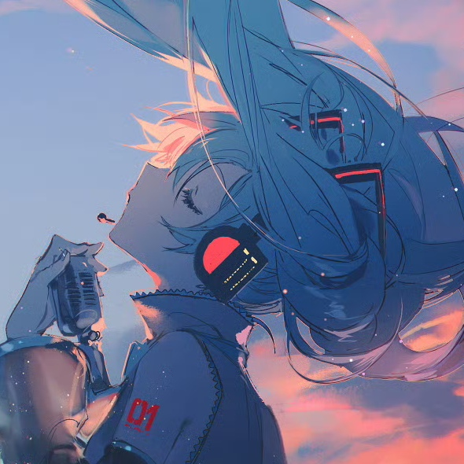

美工/UI设计
目前在北理工读大二，大数据专业。
课余爱好比较广泛，喜欢画画听歌唱歌看书打游戏，偶尔看点动画拍点照。最喜欢的乐队是ヨルシカ
也许是爱好广泛的代价，我一直对课内学习兴致缺缺，只能尽量勉强不掉队，对计算机这种东西无感，只是被社会潮流裹挟着，得过且过，想着这样也许未来会更容易拥有更舒适的生活。
不过这次的项目实践总算狠狠逼自己认真学习了一次，我终于发现这些事情还是很有一些趣味的。虽然还知之甚浅，但总归是给自己树立了向前探索的信念。（或许以后还可以尝试这种更加高科技的产粮方式？典型的同人女思维无敌了）
话是这么说，我现阶段还是菜得不行。
于是只能拼命了!!希望不要拖大家后腿，也希望三周后我们可以一起做出一款好玩的游戏Ｏ(≧∇≦)Ｏ
Github:INfrared
Steam:Infrared